Tout ce qu'il faut savoir pour utiliser Odoo au quotidien chez AH CHOU
Comprendre l'outil qui gère les opérations d'AH CHOU
Odoo est un logiciel de gestion d'entreprise (ERP) tout-en-un. Il regroupe dans une seule interface tous les outils nécessaires pour gérer les achats, les stocks, les ventes et la comptabilité.
Son fonctionnement est modulaire : chaque fonction métier est un module indépendant, mais tous communiquent entre eux automatiquement. Quand vous réceptionnez une commande d'achat, le stock se met à jour tout seul.
Odoo est accessible depuis n'importe quel navigateur web — pas besoin d'installer de logiciel sur votre ordinateur.
Quatre modules principaux sont activés pour la gestion quotidienne :
L'interface d'Odoo est organisée de façon simple :
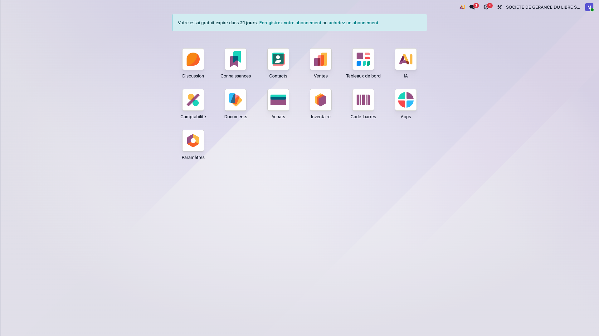
Voici comment les informations circulent dans Odoo, du fournisseur jusqu'à la facturation :
Chaque étape est liée automatiquement. Par exemple, réceptionner une commande d'achat met à jour le stock sans action supplémentaire de votre part.
Le parcours complet d'une commande, de la création à la réception
L'application de gestion des achats utilise un tableau Kanban à 7 colonnes. Chaque achat progresse de gauche à droite par glisser-déposer :
Chaque déplacement d'une colonne à l'autre déclenche automatiquement un transfert de stock interne dans Odoo, reflétant le déplacement physique de la marchandise.
Depuis l'application web, créez un nouvel achat :
L'achat reste en statut Brouillon tant que vous ne l'envoyez pas. Vous pouvez le modifier librement.
Lorsque vous cliquez sur « Envoyer », l'application :
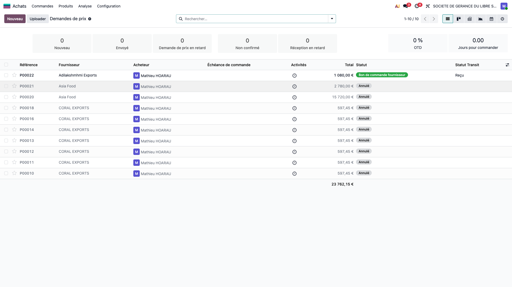
À partir de ce moment, le bon de commande est visible dans Odoo → Achats → Bons de commande. Le champ x_statut_transit suit la progression.
La marchandise voyage de l'étranger vers La Réunion. Suivez sa progression en glissant la carte d'une colonne à la suivante :
Chaque déplacement crée un transfert interne dans Odoo (module Stock). La marchandise passe d'un emplacement de transit au suivant.
Lorsque vous glissez la carte de DOUANE vers A RÉCEPTIONNER, une boîte de dialogue s'affiche pour :
Attention : vérifiez soigneusement le prix de revient avant de valider. Ce prix sera utilisé pour calculer les 7 listes de prix (CATALOGUE, HYPER, SUPER, GROSSISTE, PLATEFORME, CHR, PARTENAIRE).
Une fois dans la colonne A RÉCEPTIONNER, un bouton « Réceptionner dans Odoo » apparaît sur la carte :
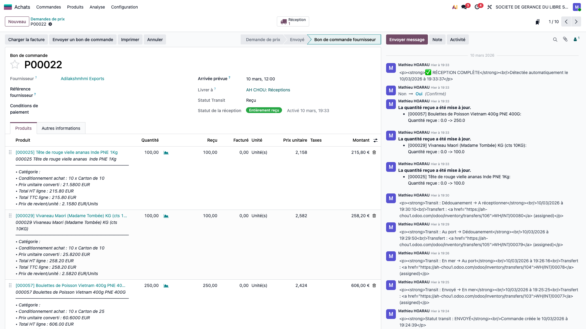
Obligatoire : chaque produit surgelé doit avoir un numéro de lot et une DLC. Sans ces informations, la réception ne peut pas être validée dans Odoo (traçabilité réglementaire).
L'application vérifie automatiquement toutes les 60 secondes si la réception a été finalisée dans Odoo (auto-polling).
Dès qu'Odoo confirme la réception complète :
Vous pouvez vérifier le stock mis à jour dans Odoo → Stock/Inventaire → Produits.
App (création) → Brouillon → Envoyé (BC Odoo créé) → En Mer → Au Port → Douane → A Réceptionner (vérification PR) → Odoo (réception lots/DLC) → Reçu (stock à jour)
Tout le suivi logistique se fait dans l'application. Seule la réception finale nécessite d'intervenir directement dans Odoo.
Réceptionner les marchandises, consulter le stock, gérer les emplacements et les dates de péremption.
Lorsque la marchandise arrive à l'entrepôt, vous devez enregistrer la réception dans Odoo pour mettre à jour le stock et assurer la traçabilité par lot.
Deux possibilités :
Inventaire → Opérations → Réceptions.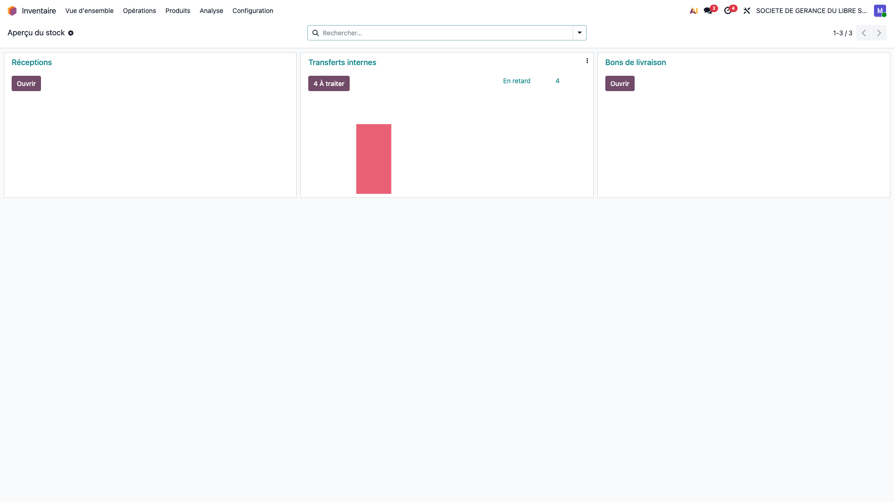
Repérez le bon de réception correspondant à votre commande. Il porte un numéro de type
WH/IN/00045. Cliquez dessus pour l'ouvrir.
Vous verrez la liste des produits commandés avec les quantités attendues.
Pour chaque ligne de produit, complétez les champs suivants :
LOT-2026-001). Si le lot n'existe pas encore, Odoo le créera automatiquement.Une fois toutes les lignes complétées, cliquez sur le bouton « Valider » en haut du formulaire. Le stock sera immédiatement mis à jour dans les emplacements choisis.
Si certaines quantités sont inférieures à la commande, Odoo vous proposera de créer un reliquat (backorder) pour recevoir le reste ultérieurement.
Il existe plusieurs façons de consulter votre stock dans Odoo, selon le niveau de détail souhaité.
Accédez à Inventaire → Analyse → Stock
ou directement via l'URL : /odoo/stock-report
Cette vue affiche l'ensemble des 347 produits avec pour chacun :
| Colonne | Signification |
|---|---|
| Coût unitaire | Prix de revient du produit (PR) |
| Valeur totale | Coût unitaire × Quantité en stock = valeur du stock |
| Disponible | Quantité physiquement disponible pour la vente |
| Virtuellement | Disponible + Entrant - Sortant (stock prévisionnel) |
| Entrant | Quantités en cours de réception (commandes confirmées) |
| Sortant | Quantités réservées pour des livraisons à venir |
Le panneau de gauche permet de filtrer par catégorie de produit :
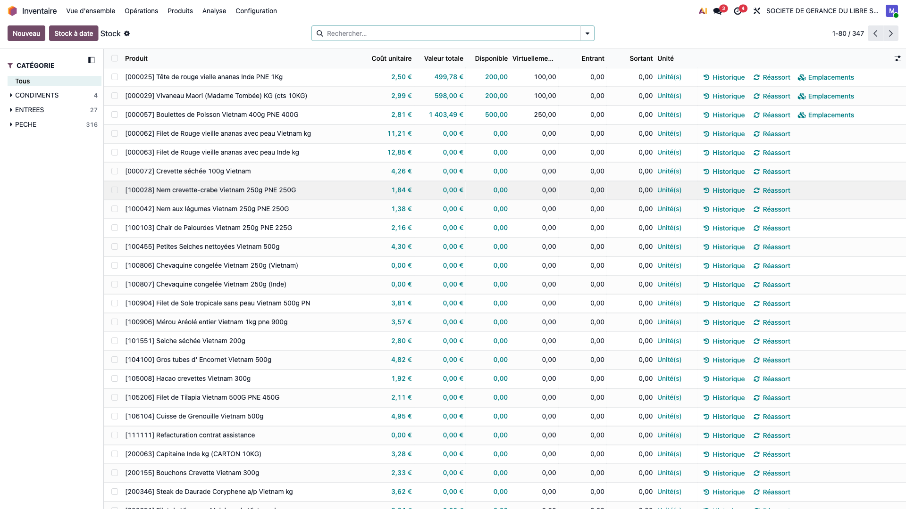
Allez dans Inventaire → Produits → Produits.
Cliquez sur le produit souhaité, puis sur l'onglet « Stock » ou sur le
bouton « X En stock » en haut à droite de la fiche.
Vous verrez la quantité disponible dans chaque emplacement, avec le détail par lot.
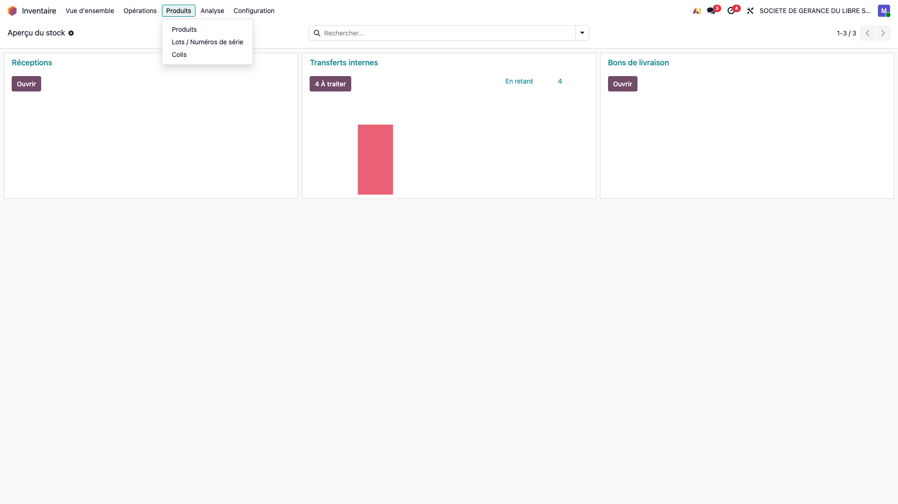
Allez dans Inventaire → Rapports → Inventaire.
Utilisez le filtre « Emplacement » pour voir le contenu d'un congélateur
ou d'une zone spécifique.
Allez dans Inventaire → Produits → Lots/Numéros de série.
Recherchez un numéro de lot pour voir le produit associé, la date de péremption (DLC),
la quantité en stock et l'historique des mouvements.
Les lots sont regroupés par emplacement pour une vision claire de la répartition :
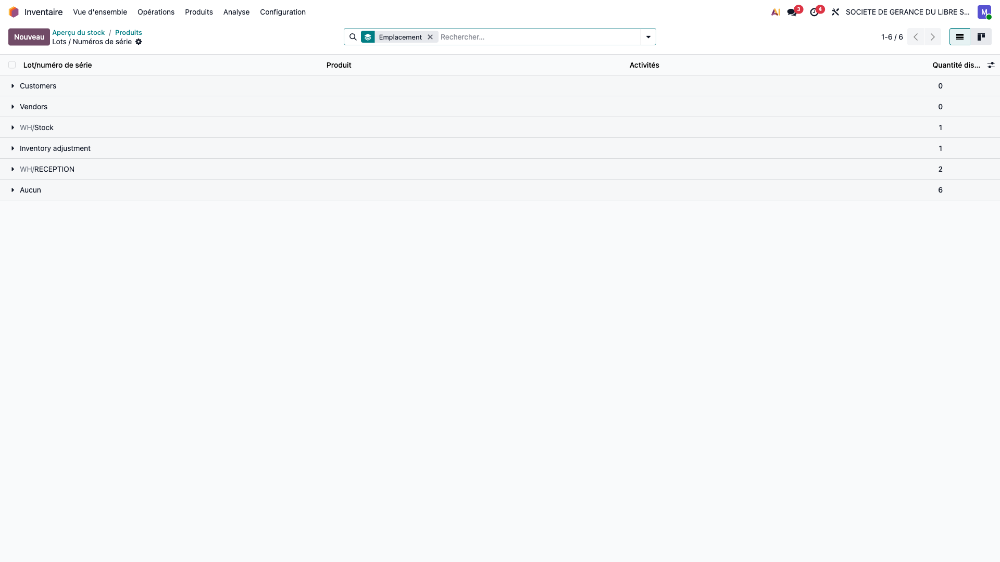
L'entrepôt AH CHOU est organisé en plusieurs zones. Chaque produit doit être rangé dans l'emplacement approprié.
FEFO signifie « First Expired, First Out » — en français : « Premier Périmé, Premier Sorti ».
Concrètement, lorsque vous préparez une commande, Odoo vous proposera automatiquement les lots dont la date de péremption est la plus proche. Cela garantit :
La gestion des dates de péremption est essentielle pour les produits surgelés. Odoo vous aide à surveiller les DLC grâce à plusieurs outils.
Allez dans Inventaire → Produits → Lots/Numéros de série.
Utilisez le filtre « Date d'alerte » pour afficher uniquement les lots dont la date d'alerte est dépassée ou proche. Vous pouvez aussi trier la colonne « Date de péremption » par ordre croissant.
Pour chaque lot proche de la péremption :
Chaque lot dans Odoo peut avoir jusqu'à 4 dates :
| Champ Odoo | Signification | Usage |
|---|---|---|
expiration_date | Date de péremption (DLC) | Date limite — au-delà, le produit ne doit plus être vendu |
use_date | Date limite d'utilisation optimale (DLUO) | Qualité optimale garantie |
removal_date | Date de retrait | Retrait des rayons / du stock |
alert_date | Date d'alerte | Odoo déclenche une alerte préventive |
| Plage | Type de produits | Vigilance |
|---|---|---|
| 1 à 3 mois | Produits à rotation rapide | Critique |
| 4 à 6 mois | Produits courants | Élevé |
| 7 à 12 mois | Produits standard | Modéré |
| 13 à 24 mois | Produits longue conservation | Normal |
| + 24 mois | Produits très longue conservation | Faible |
WH/Stock/QUARANTAINE
puis procédez à sa destruction via un ajustement d'inventaire.
Un transfert interne permet de déplacer du stock d'un emplacement à un autre au sein de l'entrepôt, sans changer de propriétaire.
Allez dans Inventaire → Opérations → Transferts internes, puis cliquez sur « Nouveau ».
Renseignez :
WH/Stock/CONGELATEUR-1)WH/Stock/PICKING)Cliquez sur « Ajouter une ligne » et sélectionnez le produit, le numéro de lot et la quantité à déplacer.
Cliquez sur « Valider ». Le stock sera immédiatement déplacé de l'emplacement source vers l'emplacement de destination.
| Action | Chemin dans Odoo |
|---|---|
| Réceptionner une commande | Inventaire → Opérations → Réceptions |
| Voir le stock d'un produit | Inventaire → Produits → [Produit] → En stock |
| Stock par emplacement | Inventaire → Rapports → Inventaire |
| Consulter un lot | Inventaire → Produits → Lots/Numéros de série |
| Transférer du stock | Inventaire → Opérations → Transferts internes |
| Vérifier les alertes DLC | Inventaire → Produits → Lots → Filtre date d'alerte |
Le processus complet de vente chez AH CHOU
Ce chapitre décrit le processus complet de vente, depuis la création d'un devis jusqu'au règlement du client. Chaque vente suit un enchaînement précis dans Odoo :
Flux de stock associé (picking) : CONGÉLATEUR → PICKING (préparation) → EXPÉDITION (chargement) → Client (BL signé). Ce flux est déclenché automatiquement par la confirmation de commande. Voir détails en section 3.2.
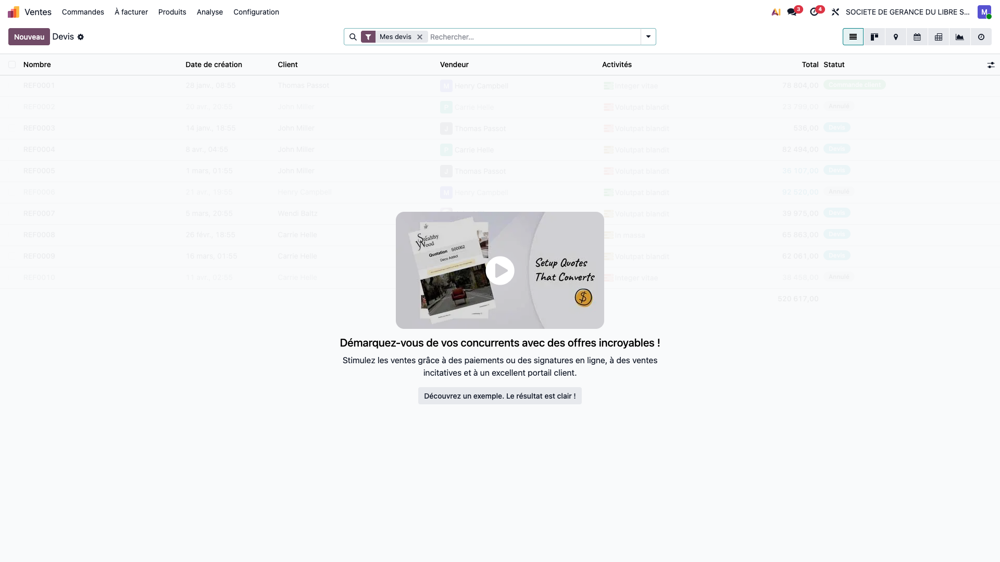
Astuce — Listes de prix
AH CHOU utilise 7 listes de prix. Chaque client est rattaché à une liste lors de sa création. Le commercial n'a pas besoin de calculer les prix manuellement.
| Liste de prix | Marge sur coût | Clientèle type |
|---|---|---|
| CATALOGUE | +40 % | Particuliers, tarif public |
| HYPER | +35 % | Hypermarchés (GMS) |
| SUPER | +30 % | Supermarchés (GMS) |
| GROSSISTE | +25 % | Grossistes |
| PLATEFORME | +20 % | Plateformes logistiques |
| CHR | +15 % | Cafés, Hôtels, Restaurants |
| PARTENAIRE | +10 % | Partenaires privilégiés |
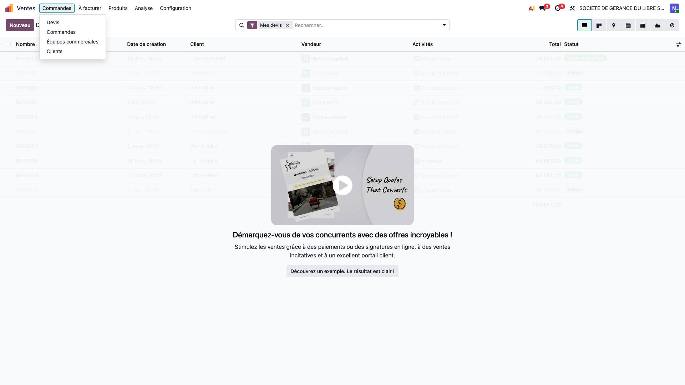
Lorsqu'une commande client est confirmée, Odoo déclenche automatiquement le flux logistique de préparation et livraison. Ce flux passe par 3 zones physiques successives avant d'arriver chez le client :
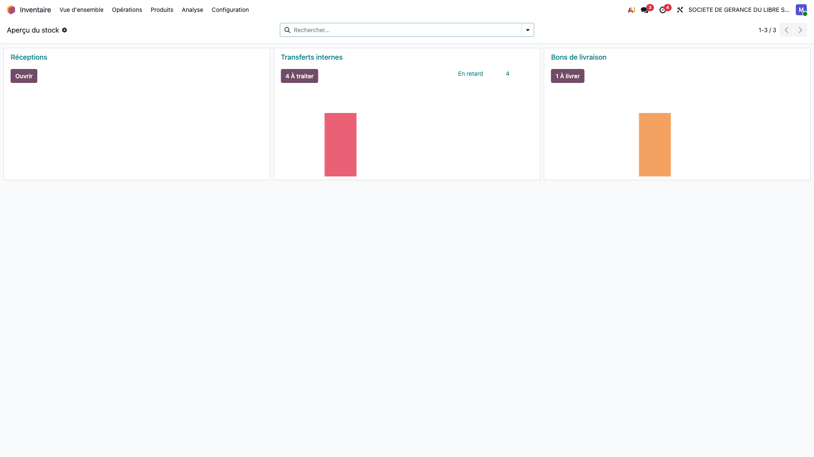
| Qui | Préparateur / magasinier |
| Où dans Odoo | Inventaire → Opérations → Transferts internes |
| Mouvement stock | CONGELATEUR 1/2/3 → WH/Stock/PICKING |
| Document Odoo | stock.picking (type : Pick / Transfert interne) |
FEFO automatique — Odoo propose les lots par date d'expiration croissante (le plus proche de la péremption en premier). Le préparateur peut ajuster si nécessaire, mais la suggestion garantit la conformité réglementaire.
| Qui | Chauffeur / livreur |
| Où dans Odoo | Inventaire → Opérations → Bons de livraison |
| Mouvement stock | WH/EXPEDITION → Clients (sortie de stock définitive) |
| Document Odoo | stock.picking (type : Ship) → BL papier imprimé |
| Opération | De | Vers | Responsable | Dans Odoo |
|---|---|---|---|---|
| Pick | Congélateur | PICKING | Magasinier | Transferts internes |
| Ship | EXPEDITION | Client | Livreur | Bons de livraison |
Livraisons partielles (Backorders)
Si le stock disponible ne couvre pas la totalité de la commande, Odoo propose de créer un reliquat. Un second BL sera généré automatiquement pour les quantités restantes, livrable lors de la prochaine tournée.
Tournées de livraison
Les livraisons sont organisées par zone (x_zone_livraison), jour (x_jour_livraison) et tournée (x_tournee). L'entrepôt effectue en moyenne 2 à 3 tournées par jour.
Lot obligatoire
Tous les 299 produits surgelés AH CHOU sont suivis par lot. Lors de la préparation (Pick), le lot doit être renseigné. Odoo le propose automatiquement via FEFO, mais le préparateur doit valider la sélection.
Règle : 1 BL = 1 facture
Clients concernés : groupe « UNE FACTURE 1 BL » (24 clients)
Procédure : Depuis la commande → Créer facture → Valider.
Facturation immédiate après chaque livraison
Règle : N BL = 1 facture
Clients concernés : groupe « PLUSIEURS BL UNE FACTURE » (201 clients)
Procédure :
Hebdomadaire ou mensuel (GMS, grossistes)
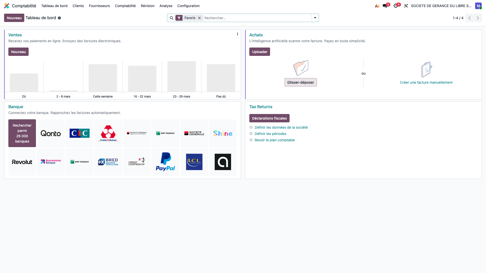
Astuce — Groupe de facturation
Le mode de facturation est défini sur la fiche client par le champ x_groupe_facturation. Il est configuré lors de la création du client et peut être modifié à tout moment.
Important — Emplacement QUARANTAINE
Les produits retournés ne réintègrent jamais directement le stock vendable. Ils sont placés en QUARANTAINE pour inspection. Seul le responsable logistique (Marc Hareng) peut décider de les reclasser ou de les détruire.
credit_limit).Encours client
Le champ credit_limit est défini sur chaque fiche client. Lorsqu'un commercial (Sarah Dine, Sam Oussah) crée un devis et que l'encours dépasse la limite, un message d'alerte s'affiche. La direction (Paul Pieuvre) peut alors décider de bloquer ou d'autoriser la commande.
| Étape | Responsable | Utilisateur test |
|---|---|---|
| Création du devis / commande | Commercial | Sarah Dine, Sam Oussah |
| Préparation & validation du BL | Logistique | Marc Hareng |
| Facturation & avoirs | Comptable | Gilles Mérou |
| Suivi des paiements | Comptable / Direction | Gilles Mérou, Paul Pieuvre |
| Gestion des retours | Logistique | Marc Hareng |
| Validation encours / exceptions | Direction | Paul Pieuvre |
Conseil — Équipe AH CHOU
Pour toute question sur le flux de vente, consultez votre responsable d'équipe ou contactez l'Équipe AH CHOU via le canal interne Odoo.
Comptes de test, identifiants et permissions par rôle
Tous les utilisateurs de test se connectent sur la même instance :
https://ah-chou1.odoo.com
Mot de passe commun
AhChou2026!
Équipe commerciale
Équipe AH CHOU
Environnement de test uniquement. Ces identifiants sont destinés à la phase de validation. Ils seront modifiés avant la mise en production.
5 utilisateurs de test ont été créés avec les profils suivants :
| Rôle | Nom | Login (e-mail) | Mot de passe |
|---|---|---|---|
| Commercial | Sarah Dine | sarah.dine@ahchou-test.com |
AhChou2026! |
| Commercial | Sam Oussah | sam.oussah@ahchou-test.com |
AhChou2026! |
| Direction | Paul Pieuvre | paul.pieuvre@ahchou-test.com |
AhChou2026! |
| Comptable | Gilles Mérou | gilles.merou@ahchou-test.com |
AhChou2026! |
| Logistique | Marc Hareng | marc.hareng@ahchou-test.com |
AhChou2026! |
Chaque profil a des permissions spécifiques dans Odoo :
| Profil | Ventes | Achats | Stock | Comptabilité |
|---|---|---|---|---|
| Admin (Mathieu) | Complet | Complet | Complet | Complet |
| Commercial (Sarah, Sam) | Ses docs | Non | Non | Non |
| Direction (Paul) | Ses docs | Utilisateur | Utilisateur | Lecture |
| Comptable (Gilles) | Tous docs | Utilisateur | Utilisateur | Complet |
| Logistique (Marc) | Non | Non | Complet | Non |
| Étape | Responsable | Utilisateur test |
|---|---|---|
| Création du devis / commande | Commercial | Sarah Dine, Sam Oussah |
| Préparation & validation du BL | Logistique | Marc Hareng |
| Facturation & avoirs | Comptable | Gilles Mérou |
| Suivi des paiements | Comptable / Direction | Gilles Mérou, Paul Pieuvre |
| Gestion des retours | Logistique | Marc Hareng |
| Validation encours / exceptions | Direction | Paul Pieuvre |
Conseil
Pour tester un flux complet, connectez-vous successivement avec les différents profils. Par exemple : créez un devis avec Sarah Dine (commercial), préparez la livraison avec Marc Hareng (logistique), puis facturez avec Gilles Mérou (comptable).